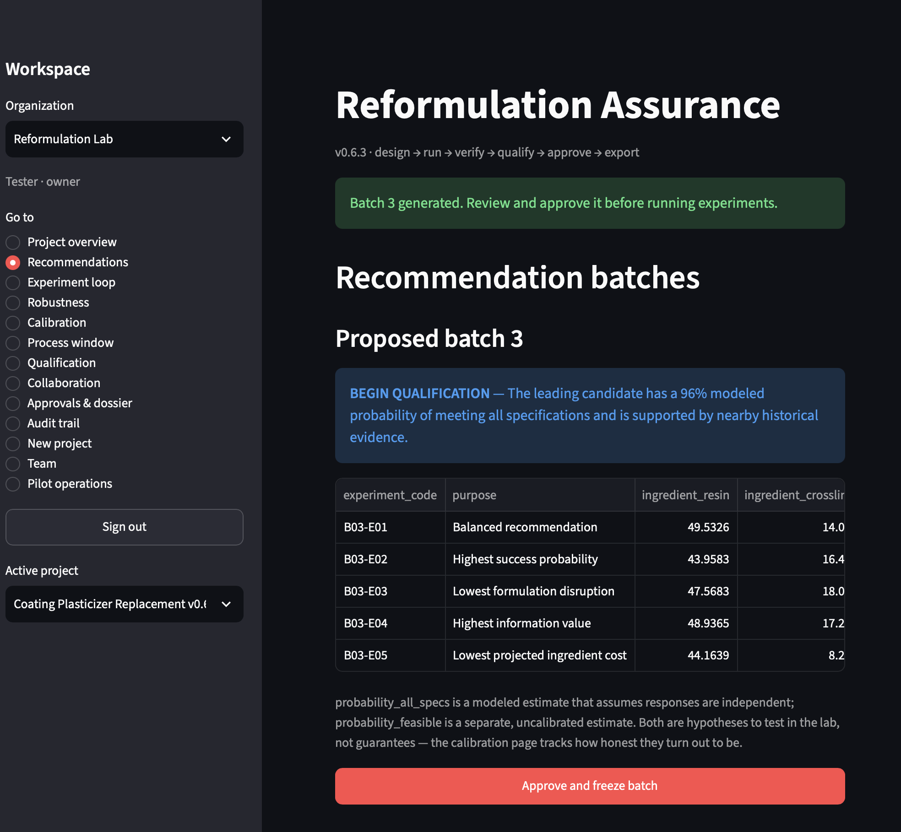

Free formulation checkers
Single-question tools for people who make things to a specification. Each one answers one question, in your browser, in about thirty seconds. No login, no install, and nothing you paste ever leaves your machine.
Baseline Drift Checker
Your control batch, reference standard, or instrument should read the same every time. Paste its history and find out whether the wobble is routine noise or a real shift — before it quietly invalidates your comparisons.
Open the drift checker →Replicate Noise Checker
You measured formula A and formula B a few times each. Paste both sets and learn whether the difference is real, borderline, or inside your noise — plus the smallest difference your replicate count could even detect.
Open the replicate checker →The full workbench
These checkers are spin-offs from Reformulation Assurance, an open-source workbench for ingredient-replacement projects: model-suggested experiments, staged qualification gates, and sign-offs that store the exact frozen evidence they covered.
It attaches to what you already use. Your spreadsheet stays the system of record: import your existing lot history from CSV or Excel, run the analysis here, and everything comes back out as files you keep — evidence tables, a printable dossier, the signed evidence snapshots. Local-first, no account, no lock-in.

Try the live demo — nothing to install, a cosmetics reformulation project preloaded.